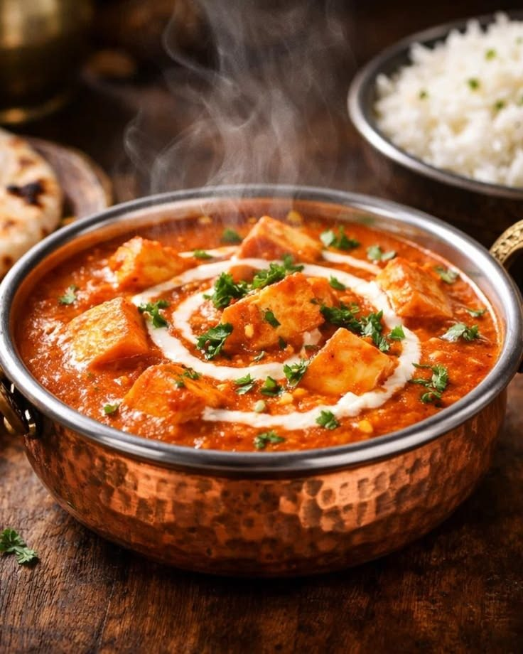

Pure vegetarian · Made with heartBalaji
Balaji
Chilukur
Family Dhaba.
Gather around good food. Enjoy comforting dhaba favourites, fragrant biryanis, and the warmth of a family meal.
View Menu A pure vegetarian kitchen

Made for sharing.FRESHLY PREPARED
Dhaba favouritesTandoori traditionsFamily moments